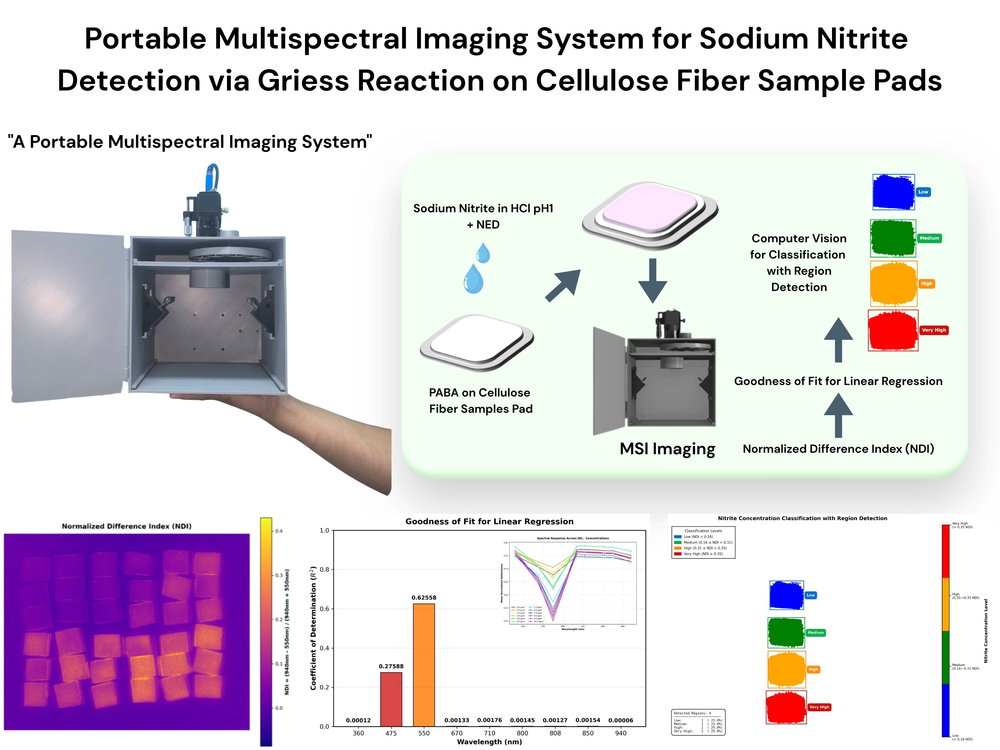

Advanced Nitrite Detection System
Available Winter 2025/26
Discover the future of sodium nitrite detection with portable multispectral imaging technology.

Catspect employs custom-built multispectral imaging (MSI) integrated with computer vision for quantitative analysis of sodium nitrite on paper-based platforms using the Griess reaction. Our system transforms conventional colorimetric detection into a robust quantitative imaging approach.
NDI achieves 19.32% improvement in R² correlation with sodium nitrite concentration compared to single-band analysis.
Nine spectral bands from 360 nm to 940 nm provide comprehensive chemical analysis with sub-minute acquisition time.
Significantly outperforms conventional RGB smartphone imaging with narrower spectral bandwidths.

360 nm - 940 nm Spectral Range
Detect sodium nitrite in processed meat products (bacon, ham, sausage). Safety limit: 80 ppm maximum for safe consumption.
Monitor nitrite contamination in drinking water. Detection range: 0-10 ppm, meeting 1 ppm safety standards.
Portable system enables rapid field testing without need for laboratory equipment or skilled technicians.

Paper-Based Detection Platform
The Griess reaction provides a simple and fast method for quantitative analysis of nitrite. An aromatic amine (PABA or SA) reacts with nitrite under acidic conditions to form a diazonium salt, which then binds to NED to create a pink-to-magenta azo dye with peak absorption at ~545 nm.
Cellulose fiber sample pads provide hydrophilic, porous matrix for spontaneous sample transport via capillary action.
Excellent specificity for nitrite ions with no false-positive signals from common interfering ions like nitrate.
Linear relationship between absorbance and nitrite concentration from 0.5 to 10 ppm.

0 ppm
2 ppm
5 ppm
10 ppm
Pink-to-Magenta Color Development with Increasing Nitrite Concentration
Dimensions: 19cm × 24cm × 30cm, Weight: 1.4kg. 3D-printed housing ensures reproducible measurements.
Powered by Raspberry Pi 5 with monochrome CMOS camera and motorized 9-filter wheel system.
Complete 9-band multispectral scan in under one minute with automated filter wheel rotation.
Catspect combines advanced multispectral imaging with portable design for professional-grade chemical analysis in the field.
360 nm • 475 nm • 550 nm • 670 nm • 710 nm • 800 nm • 808 nm • 850 nm • 940 nm
Monochrome CMOS • Motorized Filter Wheel • Halogen Illumination
0.5–10 ppm (Sodium Nitrite) • Linear Response
Raspberry Pi 5 • Python Analysis • NDI Algorithm
Sub-minute • 9 spectral bands • Automated capture
19cm × 24cm × 30cm • Weight: 1.4kg • Portable
Paper-based • PABA-NED & SA-NED • Griess Reaction
Mean IoU: 80.10% • Classification: 4 levels • High accuracy
Expected availability Winter 2025/26
Contact for Pricing
Request InformationFor research institutions, laboratories, and food safety organizations
Catspect isn't just about detection — it's about transforming conventional colorimetric analysis into robust quantitative imaging. By combining portability with scientific accuracy, Catspect enables rapid, on-site, and non-destructive chemical analysis for food safety and water quality.